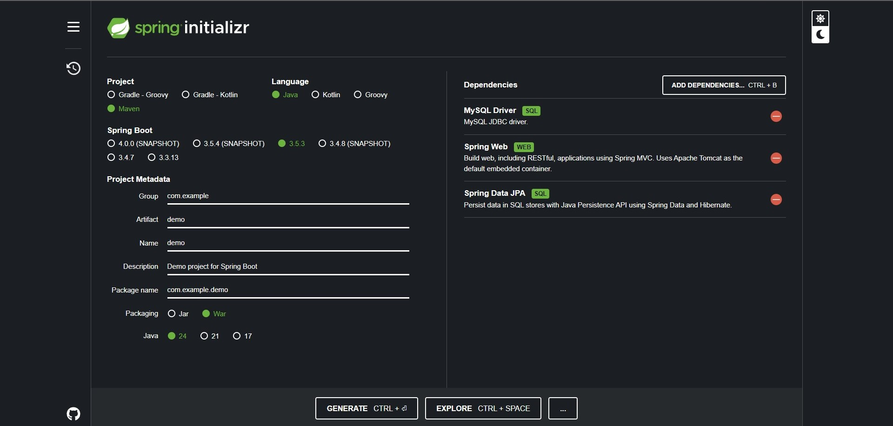

Objetivos de Aprendizaje
- Configurar y desplegar aplicaciones web en Apache Tomcat
- Aplicar el patrón MVC en proyectos JSP y Spring
- Desarrollar APIs RESTful con Spring Boot y Spring Data JPA
- Conectar aplicaciones Spring con bases de datos MySQL
- Validar datos y manejar excepciones en APIs
Tecnologías Utilizadas
- Backend: Jakarta EE, Spring Framework, Spring Boot, Spring Data JPA
- Fronted: JSP (Jakarta Server Pages)
- Base de datos: MySQL
- Herramientas: Apache Tomcat, Maven, IntelliJ IDEA
- Despliegue: Servidor local (Tomcat), configuración de variables de entorno
¿Que se hizo?
1. Configuración de entornos
- Instalación de JDK, Apache Tomcat, y configuración de variables de entorno.
- Creación de proyectos Maven y gestión de dependencias.

2. Desarrollo con JSP
- Creación de páginas dinámicas usando scriptlets, declaraciones y expresiones JSP
- Implementación de formularios con métodos GET y POST
- Uso de objetos implícitos de JSP (request, response, session)
3. Spring Framework
- Configuración de Spring IoC Container mediante archivos XML
- Desarrollo de APIs RESTful con Spring Boot y Spring Data JPA
- Validación de datos y manejo de excepciones
4. Verificación con Postman
- El testeo de este programa se hizo con Postman
Ejercicios
Ejercicios Propuestos de Desarrollo API con Spring
- Los ejercicios propuestos al final del documento
plantean desafíos prácticos para implementar APIs REST con Spring,
abarcando desde validaciones básicas hasta operaciones CRUD complejas
con múltiples tablas relacionadas. El primer ejercicio se enfoca en validar
parámetros numéricos en la ruta, el segundo en calcular promedios a partir de
parámetros query, mientras que los dos últimos plantean el diseño completo de
APIs para gestionar datos geográficos estructurados en tres tablas relacionadas
(departamento, provincia y distrito), incluyendo operaciones CRUD y consultas específicas.
Conclusión
El proyecto demostró cómo integrar tecnologías como JSP, Jakarta EE y Spring para construir
aplicaciones web robustas y escalables. La combinación de Spring Boot con JPA simplificó
la conexión con bases de datos, mientras que el patrón MVC y las validaciones mejoraron
la estructura y seguridad del código.
Reflexión
El uso de Spring Framework agiliza el desarrollo de aplicaciones empresariales,
pero requiere comprensión profunda de conceptos como IoC y DI. La autenticación
con JWT (no cubierta aquí pero relevante) sería un siguiente paso para mejorar
la seguridad. La práctica reforzó la importancia de planificar la arquitectura
antes de codificar.
Recursos Utilizados